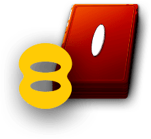
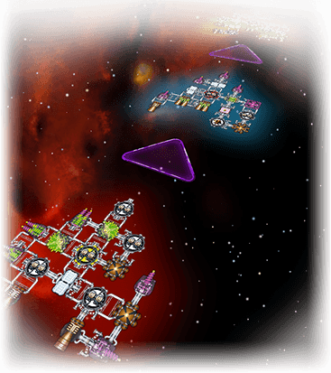

Der Flug
Der Fliug besteht aus einer bestimmten Anzahl von Abenteuerkarten (in diesem Fall 8).
Der Flugplan zeigt die relativen Positionen der Schiffe während des Flugs. Alle Schiffe bewegen sich mit konstanter Geschwindigkeit in Richtung ihres Ziels. Während der Reise gibt es bestimmte Abenteuer, die dafür sorgen, dass sich die Reihenfolge und Abstände der Schiffe untereinander verändern.
Der Flug ist vorbei, sobald alle Abenteuerkarten aufgedeckt wurden.
Ansichten
 Klicke auf den Avatar eines Spielers, um dir dessen Schiff anzeigen zu lassen.
Klicke auf den Avatar eines Spielers, um dir dessen Schiff anzeigen zu lassen.
 Oder klicke einfach direkt auf das Schiff.
Oder klicke einfach direkt auf das Schiff.
 In der Schiffsansicht kannst du auf das Vergrößerungsglas-Symbol klicken, um zur Flugansicht zurückzukehren.
In der Schiffsansicht kannst du auf das Vergrößerungsglas-Symbol klicken, um zur Flugansicht zurückzukehren.
Infotafel
Die Infotafel ist verfügbar, wenn du auf irgendein Spieler-Schiff gezoomt hast. Klicke auf den Tab unten auf deinem Bildschirm, um die Infotafel anzuzeigen.


Die Infotafel zeigt dir eine Menge nützlicher Informationen:
- Den Namen des Truckers.
- Die Klasse des Schiffs. (Schiffe mit größeren lateinischen Ziffern sind größer.)
- Die Zahl der Credits, die durch die Abenteuer des Flugs verdient wurden.
- Die Versicherung – das Limit, bis zu dem der Spieler ggf. für verlorene Bauteile zahlen muss.
- Die Anzahl der unterwegs verlorenen Bauteile.
- Die Summe, die der Spieler für diese verlorenen Bauteile zahlen muss.
- Die Belohnungen für das Beenden des Flugs. (Wer früher ins Ziel kommt, bekommt mehr Credits.)
- Die Belohnung für den, der die wenigsten offenen Anschlüsse hat.
- Der Gesamtwert aller Waren an Bord.
- Die Anzahl der Besatzungsmitglieder.
- Die Anzahl der Batterien
 .
. - Die Motorenstärke.
- Die Kanonenstärke.
- Die Anzahl der offenen Anschlüsse.
- Und ein „diesen Flug aufgeben“-Button.
Klicke auf die Infotafel, um sie wieder in den unteren Bildschirmrand zurückzuschieben.
Abenteuerkarten
Die Ereignisse des Flugs werden durch Abenteuerkarten festgelegt, die in der oberen linken Ecke des Bildschirms zu sehen sind. Die hier gezeigten Karten sind alle vom Level I. Abenteuer der Level II und III sind härter, bringen aber auch größere Belohnungen. Bei Flügen mit Abenteuerkarten höherer Level hast du ein größeres Schiff.
Der Stapel gibt dir einen kleinen Hinweis darauf, was als nächstes kommt. Bei einem Flug des Levels I werden zwar alle Karten auch vom Level I sein, aber bei Flügen mit höheren Leveln werden die Karten ein Mix aus verschiedenen Leveln sein. Wenn du also eine III oben auf dem Stapel siehst, weißt du, dass das nächste Abenteuer dicke Belohnungen oder dicken Ärger bringen wird. Wahrscheinlich beides.
Klicke auf den Stapel, um zu sehen, was das nächste Abenteuer sein wird!
Was dir alles auf dem Flug zustoßen kann
Die Abenteuerkarten bieten eine Reihe von Herausforderungen und Möglichkeiten.
Flugtage gewinnen oder verlieren
Einige Abenteuer werden dich Flugtage kosten. Karten, die Belohnungen bieten, haben in ihrer unteren rechten Ecke eine Zahl. Es ist die Anzahl der Tage, die du verlieren wirst, wenn du die Belohnung annimmst. Du kannst ebenfalls Flugtage verlieren, wenn du versuchst, durch eine Kampfzone zu kommen.
Wenn du Flugtage verlieren solltest, wird dein Schiff auf der Flugstrecke zurück bewegt. Zwei Schiffe dürfen nie auf demselben Platz stehen, also wird ein Schiff, das sich zurückbewegt, Schiffe hinter sich überspringen.
Wenn der Führende
2 Tage verliert

Wenn der zweite
Spieler
2 Tage verliert

Wenn beide Spieler
2 Tage verlieren

Ähnlich ist es, wenn ein Schiff Flugtage dazugewinnt. Es bewegt sich vorwärts und überspringt Schiffe vor ihm. Deine Chance zum Gewinnen von Flugtagen ist Freier Weltraum.
Manchmal möchtest du weiter vorne sein, manchmal nicht.
Der Führende hat immer die erste Wahl bei Belohnungen. Solche Belohnungen kosten aber immer auch Flugtage. Manchmal möchtest du eine Belohnung ausschlagen, um weiterhin Führender zu bleiben.
Spieler, die vorne liegen, müssen als erste gegen Feinde kämpfen. Das ist vorteilhaft, wenn du die Feinde besiegen kannst, aber dumm, wenn sie dich besiegen. Spieler, die vorne liegen, verlieren automatisch bei Gleichständen in Kampfzonen. Manchmal kann es vorteilhaft sein, hinter anderen Spielern zu liegen.
Wenn du bis zum Ende des Flugs überlebst, wird dein Zieleinflugs-Bonus besser sein, je weiter du vorne bist. Also ist es immer gut, nach dem letzten Abenteuer weiter vorne zu liegen.
Waren bekommen

Wenn eine Abenteuerkarte dir erlaubt, Waren auf dein Schiff zu laden, kannst du sie von der Dialogbox ziehen und auf deinem Schiff in deine Warencontainer fallen lassen oder du kannst sie einfach anklicken und sie werden automatisch auf dein Schiff gelegt.
Versuche die wertvollsten Waren auf Ladeflächen zu legen, die während des Flugs wahrscheinlich nicht zerstört werden.
Jedesmal, wenn du Waren bekommen kannst, hast du die Möglichkeit, deine bisher gelagerten Waren umzusortieren, indem du sie auf andere Ladeflächen ziehst.
Überzählige Waren musst du ins All werfen. Du darfst Waren aus deinem Schiff zurück in die Dialogbox ziehen oder klicke einfach auf die Waren auf den Ladeflächen, und sie werden automatisch bewegt.
Die Preisliste wird dir bei der Entscheidung helfen, was du behalten und was du wegwerfen solltest:


Rote Waren sind die wertvollsten, jedoch sind es Gefahrgüter, die nur in roten Containern gelagert werden können, nicht in weißen. In roten Containern dürfen aber auch gelbe, grüne oder blaue Waren liegen.
So lange du genug Platz hast, solltest du alles mitnehmen, was du kriegen kannst, auch dann, wenn du billige Waren in roten Containern lagern musst. Wenn du neue Waren lädst, kannst du sie ja immer noch umsortieren bzw. wegwerfen.
Sobald du mit der Anordnung deiner Ladung zufrieden bist, klicke auf das  Symbol, um anzuzeigen, dass du fortfahren willst.
Symbol, um anzuzeigen, dass du fortfahren willst.
Waren verlieren
Wenn dich eine Karte auffordert, Waren abzugeben, wirst du zuerst die wertvollsten Waren verlieren. Die Angreifer werden sich diese Waren automatisch nehmen, auch hast du keine Möglichkeit festzulegen, von wo sie genommen werden sollen. Wenn du weniger Waren als gefordert hast, werden sie zum Ausgleich Batterien  mitnehmen. Sobald du keine Waren oder Batterien
mitnehmen. Sobald du keine Waren oder Batterien  mehr haben solltest, können sie dir auch nichts mehr wegnehmen.
mehr haben solltest, können sie dir auch nichts mehr wegnehmen.
Besatzung verlieren
Einige Abenteuer bieten Belohnungen, die du nur bekommst, wenn du eine bestimmte Anzahl Besatzungsmitglieder verlierst. Andere Abenteuer bestrafen dich, indem sie dir eine bestimmte Zahl Besatzungsmitglieder abnehmen. In beiden Fällen wird das Spiel auf dein Schiff zoomen und deine Kabinen hervorheben, sodass du dir aussuchen kannst, welche Besatzungsmitglieder du abgeben willst. Klicke auf eine Kabine, um dir die Möglichkeiten anzeigen zu lassen. Aliens zählen auch als Besatzungsmitglieder und können natürlich ebenfalls wahlweise abgegeben werden. Wenn du mit deinen Entscheidungen zufrieden bist, klicke auf das  Symbol, um anzuzeigen, dass du diese Besatzungsmitglieder abgeben willst.
Symbol, um anzuzeigen, dass du diese Besatzungsmitglieder abgeben willst.
Wenn du keine menschliche Besatzung mehr haben solltest, musst du den Flug aufgeben, sobald die Abenteuerkarte abgehandelt ist.
Dein Schiff wird getroffen
Dein Schiff wird vielen Gefahren begegnen. Einige davon können tatsächlich Bauteile deines Schiffes abreißen! Hier kommt eine Liste der Dinge, die dich treffen können und wie du dich dagegen wehren kannst:
- Ein kleiner Meteorit wird einfach von deine Schiff abprallen, es sei denn, er trifft auf einen offenen Anschluss. In diesem Fall musst du 1 Batterie ausgeben, um einen Schild zu versorgen, der diese Seite schützt, ansonsten wir dieses Bauteil zerstört.
- Ein großer Meteorit zerstört das Bauteil, auf das er trifft, immer, es sei denn, du schießt ihn mit einer Kanone ab.
- Leichtes Kanonenfeuer kann durch einen Schild absorbiert werden. Das kostet dich 1 Batterie . Anderenfalls wird das getroffene Bauteil zerstört.
- Schweres Kanonenfeuer zerstört einfach alles, was es trifft. Es gibt keinen Schutz dagegen.
Wenn dein Schiff getroffen wird (weil du es nicht schützen kannst oder willst), wird das getroffene Bauteil zerstört. Das kann dazu führen, dass auch andere Bauteile abfallen. Sie treiben vom Schiff weg ins All.
Wenn dein Schiff in zwei Teile zerfällt, musst du entscheiden, mit welchem Teil du bis zum Ziel fliegen willst, indem du es anklickst. Der Rest des Schiffs ist dann verloren. Bauteile, die nicht mit deinem Schiff verbunden sind, wenn du denen Flug beendet hast, zählen als unterwegs verlorene Bauteile.
Aufgeben
Es kann sein, dass du aufgeben musst, bevor du dein Ziel erreichst. Manchmal willst du den Flug auch einfach aufgeben. So etwas passiert dauernd. Die Corporation mbH wird dich in eine ihrer Lagerhallen schleppen und dir einen neuen Versuch gestatten.
Wenn du aufgibst:
- Für den Rest des Flugs bist du nur noch ein Zuschauer und alle Abenteuer betreffen dich nicht mehr.
- Wenn der Flug beendet ist, bekommst du keinen Bonus.
- Deine Waren werden zum halben Preis verkauft.
- Du musst trotzdem noch die Strafe für auf dem Weg verlorene Bauteile bezahlen.
Wenn du der einzige bist, der übrig ist, weil alle anderen aufgegeben haben, kannst du weiterfliegen und die restlichen Abenteuer alleine bestehen. Karten wie Kampfzone und Sabotage, die Spieler bestrafen, weil sie den wenigsten Kram von irgendetwas haben, werden ausgelassen. (Du bist ja nicht der Schlechteste. Du bist der Beste!)
Alle Menschen verlieren
Du musst zwangsläufig aufgeben, wenn eine Abenteuerkarte dich ohne menschliche Besatzung zurücklässt. (Aliens alleine können das Schiff nicht steuern.) Das könnte passieren, wenn ein Treffer deine letzte verbleibende, besetzte Kabine zerstört, wenn du Besatzung in einer Kampfzone verlierst oder durch Sklavenhändler, oder weil du freiwillig dein letztes Besatzungsmitglied zu einem verlassenen Schiff schickst. Wenn du das letzte menschliche Besatzungsmitglied in einer Kampfzone verlierst, bleibt dein Schiff so lange noch im Flug, bis alle Effekte der Karte abgehandelt wurden.
Freier Weltraum ohne Motoren
Dank der Massenträgheit kann dein Schiff die Reise auch ohne Motoren beenden, so lange du nicht auf Freien Weltraum triffst. Wenn du auf eine Karte Freier Weltraum triffst, musst du aufgeben, falls deine Motorenstärke bei null liegt.
Den Flug aufgeben
Manchmal ist es schlauer, einen Flug aufzugeben, um seine Verluste zu minimieren. Du kannst den Flug aufgeben, indem du deinen Avatar anklickst um auf dein Schiff zu zoomen. Klicke auf den Tab am unteren Rand des Bildschirms, um die Infotafel aufzurufen und dann klicke auf den Button „den Flug aufgeben“.
Ende der Reise
Sobald die letzte Abenteuer-Karte abgehandelt worden ist, ist der Flug vorbei. Jetzt geht es daran, deine Belohnungen einzusacken! (Und die Strafe für die unterwegs verlorenen Bauteile zu bezahlen!)